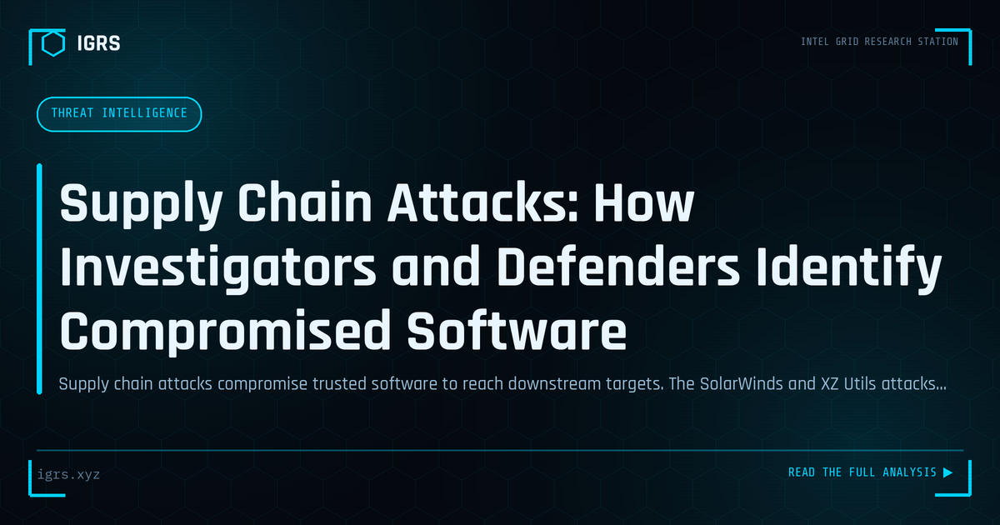

Supply Chain Attacks: How Investigators and Defenders Identify Compromised Software
| File No. | IGRS-050/2026 |
| Subject | Detection and investigation methodology for software supply chain attacks affecting Indian organizations |
| Category | Threat Intelligence |
| Author | Manuj Kumar Pandey |
| Published | 2026-05-06 |
| Reading time | 12 minutes |
Supply chain attacks compromise trusted software to reach downstream targets. The SolarWinds and XZ Utils attacks defined a generation of threat. How to detect and investigate them.
Supply Chain Attacks: Trust Turned Against You
Some of the most devastating cyberattacks in recent years did not breach their victims directly — they compromised a trusted supplier and rode that trust into thousands of organisations. Supply chain attacks exploit the relationships and dependencies that modern organisations rely on, turning trusted software, vendors, and services into attack vectors. Understanding and defending against them is a critical modern security challenge. This guide covers supply chain attacks and OSINT's role.
What Is a Supply Chain Attack?
A supply chain attack compromises an organisation through a trusted third party rather than attacking it directly. By breaching a software vendor, a code library, a managed service provider, or a hardware supplier, attackers reach all the downstream customers who trust that supplier. A single compromise can cascade to thousands of victims, making supply chain attacks extraordinarily efficient and dangerous.
Types of Supply Chain Attacks
| Type | Method |
|---|---|
| Software supply chain | Compromising software updates or builds |
| Dependency attacks | Malicious code in libraries/packages |
| Vendor compromise | Breaching a service provider with access |
| Hardware tampering | Compromised components |
| Watering hole | Compromising sites the target uses |
How Software Supply Chain Attacks Work
In a software supply chain attack, the attacker compromises the software's build or distribution process, inserting malicious code that is then distributed to all users as a legitimate, signed update. Because the software is trusted and the update appears genuine, it bypasses normal defences. Victims install the compromise themselves, believing it to be a legitimate update from a trusted vendor. This trust exploitation is what makes these attacks so effective.
The Dependency Risk
Modern software is built on countless open-source libraries and dependencies, each a potential attack vector. Attackers compromise popular packages, publish malicious packages with names similar to legitimate ones (typosquatting), or take over abandoned packages. When developers include these in their software, the malicious code spreads. Managing dependency risk through verification and monitoring is a key supply chain defence.
OSINT for Supply Chain Risk Assessment
OSINT helps organisations understand their supply chain exposure. By identifying their vendors, software dependencies, and third-party relationships, organisations map potential attack paths. Monitoring vendors' security posture, breach disclosures, and reputation provides early warning of supply chain risk. OSINT also helps assess a vendor's security before engagement, informing risk-based decisions about which suppliers to trust with access.
Defending Against Supply Chain Attacks
Supply chain defence requires multiple measures:
- Vendor risk assessment before and during engagement
- Software Bill of Materials (SBOM) to track dependencies
- Code signing verification for updates
- Least-privilege access for third parties
- Monitoring for anomalous vendor or update activity
- Network segmentation limiting third-party access
The Software Bill of Materials
A Software Bill of Materials (SBOM) is an inventory of all components and dependencies in a piece of software. Maintaining SBOMs lets organisations know exactly what is in their software, quickly identify whether they are affected when a vulnerability or compromise is disclosed in a component, and manage dependency risk proactively. SBOMs are increasingly recognised as a foundational supply chain security practice.
Vendor Risk Management
Since vendors with access represent supply chain risk, managing that risk is essential. This involves assessing vendors' security posture before engagement, limiting their access to the minimum necessary, monitoring their activity, including security requirements in contracts, and having a plan for vendor compromise. The level of scrutiny should match the access and trust granted — vendors with deep access warrant the most rigorous assessment.
Incident Response for Supply Chain Attacks
When a supply chain compromise is disclosed, rapid response is critical: determine whether the organisation uses the affected supplier or component, assess the exposure and potential impact, apply patches or mitigations, hunt for indicators of compromise, and engage the vendor and authorities as needed. Because supply chain attacks affect many organisations simultaneously, threat intelligence sharing and CERT-In advisories play an important role in coordinated response.
Building Supply Chain Resilience
For Indian organisations increasingly dependent on global software and service supply chains, building resilience is essential. This means knowing your dependencies through SBOMs, assessing and monitoring vendors, verifying software integrity, limiting third-party access, and maintaining the ability to respond quickly when a supply chain compromise emerges. As attackers increasingly target the trusted relationships organisations depend on, supply chain security has become a critical discipline — defending not just your own systems but the entire chain of trust they rely upon.